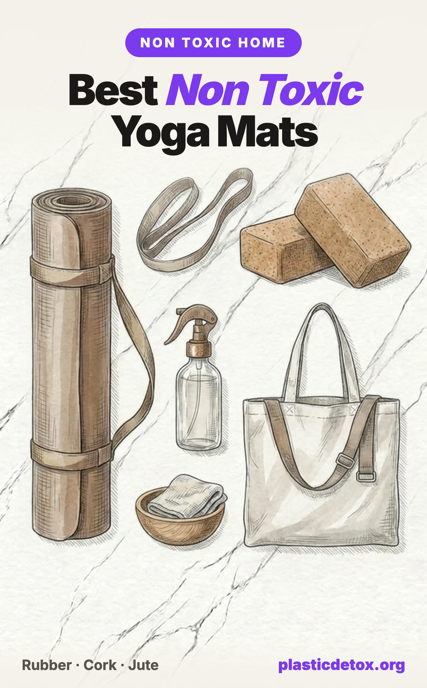

Best Non Toxic Yoga Mats: Rubber, Cork, and Jute (2026)

The 30 Second Summary
- Your yoga mat is a full body contact surface. You press your face, palms, and bare skin into it for an hour while breathing right above it, so the material matters more than for almost any other product in your home.
- Most mats are PVC, TPE, NBR, or EVA foam. PVC (vinyl) is made from a known carcinogen, EVA foam can off gas formamide, and even "eco" labels like PER are usually just PVC in disguise (Ecology Center testing, 2019).
- Best value pick: JadeYoga Harmony, open cell natural rubber, made in the USA, no PVC or heavy metals, superb grip once you sweat.
- Best all rounder: Manduka eKO 5mm, 100% natural tree rubber with a closed cell surface that wipes clean.
- Best for hot yoga: Yoloha cork mat, cork grips better the more you sweat and is naturally antimicrobial.
- One caveat: natural rubber and cork contain latex. If you have a latex allergy, see our note on the Manduka PRO exception below.
A yoga mat is one of the most intimate surfaces in your home. For an hour at a time you press your face into it during child's pose, plant your palms and bare feet on it, sweat into it, and breathe from just a few inches above it. Very few products get that much sustained, full body, skin to surface contact. So the question of what your mat is actually made of is not a minor one.
The problem is that the majority of yoga mats sold today are made from plastics and synthetic foams that shed microplastic particles and off gas volatile chemicals, and the industry has become expert at hiding that behind words like eco, natural, and plant based. This guide walks through exactly what the common mat materials are, what independent labs and regulators have found in them, and which genuinely non toxic mats are worth buying.
If you are working through your home room by room, this pairs well with our guides to microplastics in clothing and laundry and microplastics in indoor air, since your workout space concentrates both.
1. Why the Material Matters More Here
With most plastic products, the exposure route is indirect: a container touches your food, a bottle holds your water. A yoga mat is different in three specific ways that amplify exposure.
- Direct, prolonged skin contact. Your palms, feet, forearms, and face are in continuous contact with the surface, and warm skin plus friction accelerates the transfer of surface chemicals and fine particles.
- You breathe from the mat. In poses like child's pose, downward dog, and savasana your nose and mouth sit directly above the surface, exactly where any off gassing VOCs are most concentrated. That new mat smell is not neutral, it is a chemical you are inhaling.
- Heat and sweat. Body heat, and especially the 90 to 105 degree rooms used for hot yoga, drive faster off gassing and faster breakdown of the mat surface into microplastic fragments.
2. The Problem Materials: PVC, TPE, NBR, EVA
Four synthetic materials make up the vast majority of mats on the market. Here is what each one actually is.
PVC (Vinyl)
PVC is the default cheap mat material and the one to avoid most firmly. It is made from vinyl chloride monomer, which the International Agency for Research on Cancer classifies as a Group 1 known human carcinogen. PVC is rigid on its own, so it has to be softened with plasticizers. For decades those were ortho phthalates such as DEHP, which are endocrine disrupting chemicals. PVC can also carry lead or cadmium stabilizers, and its manufacture and incineration release dioxins. Newer mats have shifted to phthalate substitutes like DOTP, which are likely safer but still have real data gaps, and none of that changes the fact that the base material is vinyl.
PER (Polymer Environmental Resin)
PER sounds like a green alternative. It is not a distinct material. Independent testing confirmed that PER is simply PVC without the ortho phthalate plasticizers. It is a marketing term, and treating it as anything other than PVC is a mistake.
TPE (Thermoplastic Elastomer)
TPE is a genuine step down in hazard from PVC. It is a blend of plastic and rubber polymers, usually petroleum based, with no chlorine, no phthalates, and no heavy metals. But it is still a synthetic plastic. It can off gas VOCs when new or heated, and it sheds microplastics as it abrades. TPE is a reasonable budget compromise if natural rubber is out of reach, but it does not belong in the same category as rubber or cork. If you go TPE, insist on an OEKO-TEX certified mat.
NBR (Nitrile Rubber Foam)
NBR is the thick, cushy foam used in cheap fitness mats. It is a synthetic rubber made from acrylonitrile (a probable carcinogen) and butadiene, and some formulations blend in PVC. It is chemically intensive to produce and tends to off gas. Skip it for anything you will be breathing over.
EVA Foam
EVA is the interlocking puzzle tile foam, also sold as cheap exercise and kids mats. Its signature hazard is formamide, a foaming agent that is a reproductive toxicant and possible carcinogen and that off gasses over time. This is not a fringe concern, it is a regulated one, covered in the next section.
3. What Independent Testing and Recalls Found
Two bodies of evidence matter here: a lab study that tested actual mats, and a series of regulatory actions on foam.
The Ecology Center Yoga Mat Testing
The most cited independent analysis comes from the Ecology Center's HealthyStuff lab, which bought and tested popular mats. The headline finding was widespread greenwashing. Specifically:
- Every PVC mat they tested contained a plasticizer. The newer ones had switched to DOTP, a phthalate substitute that is likely safer but has unresolved toxicity questions.
- Mats marketed as PER turned out to be PVC without ortho phthalates, confirming that the label is cosmetic.
- A mat sold as natural jute was mostly PVC with a single thin jute layer laminated on top, a textbook greenwashing example.
- A mat made from recycled wetsuit material contained ortho phthalates, the more hazardous class, showing that recycled does not automatically mean clean.
EVA Foam and Formamide Recalls
The concern with EVA foam is documented in regulation, not just theory. The European Union's toy safety rules have restricted formamide in foam play mats since 2013, and a 2018 regulation set a ceiling of 200 mg/kg of formamide in foam mats, far stricter than the roughly 1,000 mg/kg tolerated in the United States. Belgium became the first country to ban EVA foam play mats outright over formamide, and the EU's Safety Gate rapid alert system has logged dozens of foam product notifications, from jigsaw floor mats to foam sandals, pulled for formamide or acetophenone.
Those formal actions target children's foam play mats, but it is the same EVA foam sold cheaply as yoga and exercise mats. It is a well founded reason to avoid the category. We did not find a class action lawsuit specific to yoga mats, and we would be skeptical of any blog that claims one exists.
4. The Non Toxic Materials
Now the good news. There are four genuinely non toxic mat materials, each with its own strengths and one or two tradeoffs.
Natural Rubber
Harvested from the rubber tree, natural rubber is the gold standard for a non toxic mat. It grips beautifully, cushions the joints, contains no PVC, phthalates, or heavy metals, and is biodegradable at end of life. The tradeoffs: it carries a mild plant rubber smell for the first few days, it is heavier than plastic mats, it degrades faster in direct sunlight, and, most importantly, it contains natural latex, which rules it out for anyone with a latex allergy. Open cell rubber (as in the Jade Harmony) grips exceptionally well once you sweat but absorbs moisture; closed cell rubber (as in the Manduka eKO) resists moisture and wipes clean.
Cork
Cork is harvested from the bark of the cork oak without felling the tree, so it is highly renewable. It is naturally antimicrobial and, unusually, grips better the more you sweat, which makes it the standout choice for hot yoga. Cork is almost always bonded to a natural rubber base, so it shares the latex caveat, and the surface feels firmer than pure rubber.
Jute
Jute is a fast growing plant fiber with a pleasant natural texture and good dry grip. It is biodegradable and low impact to grow. The catches: it is coarser against the skin, offers less cushion, and is the material most often blended with PVC or PER, so composition matters enormously. A mat labeled jute and PER is a plastic mat.
Organic Cotton
Organic cotton mats and rugs are fully natural, washable, and often carry GOTS or OEKO-TEX certification. They are thin with minimal cushion and can slide on hard floors, so they suit gentle and restorative practice, or use over a firmer mat, rather than hot power flow. Look for the same organic and low tox fabric standards we cover in our guide to sustainable fabrics that are not.
The standout in this category is the Öko Living herbal mat. It is a handloomed, GOTS and USDA certified organic cotton rug on a natural tree rubber backing, dyed with an Ayurvastra herbal process that uses a salt mordant rather than the heavy metals common in conventional textile dyeing. It is one of the very few organic cotton mats that clearly states its full composition rather than hiding plastic behind a natural sounding name. Two honest notes: it is a firm cotton rug, not a cushioned mat, so many people lay it over a firmer base, and the cotton can shed some fibers, especially when new. The rubber backing also carries the usual latex caveat.
5. Material Comparison
| Material | Microplastics / Off Gassing | Grip | Best For |
|---|---|---|---|
| Natural rubber | None (plant based) | Excellent | All around daily practice |
| Cork + rubber | None (plant based) | Excellent when wet | Hot yoga, sweaty practice |
| Jute | None if 100% jute | Good (dry) | Natural texture, light practice |
| Organic cotton | None (plant based) | Low on hard floors | Restorative, over another mat |
| TPE | Sheds, mild off gas | Good | Budget compromise only |
| PVC / PER | Sheds, phthalate risk | Good | Not recommended |
| NBR / EVA foam | Off gasses (formamide in EVA) | Moderate | Not recommended |
6. Best Non Toxic Yoga Mats
Four picks, ordered from lowest to highest price. Every one is genuinely plant based (natural rubber or cork over rubber), with no PVC, phthalates, or heavy metals. Each carries the natural latex caveat noted above.

JadeYoga Harmony
Open cell natural rubber, 68 x 24 in, about 4.7 mm. Made in the USA, no PVC, phthalates, or heavy metals. High grip once you sweat; a tree is planted per mat.
View →
Manduka eKO 5mm
100% natural tree rubber, 71 x 26 in, 5 mm, closed cell surface that wipes clean. Non Amazon sourced rubber with over 30% recycled content. Balanced cushion and grip.
View →
Yoloha Cork Mat
Natural cork surface over a natural and recycled rubber base, 72 x 26 in, about 6 mm. USA made, largely renewable content. Antimicrobial and grippier the more you sweat.
View →
Liforme Original
Natural rubber base with an eco polyurethane top and printed alignment markers, 4.2 mm, PVC and phthalate free, non toxic inks, B Corp. Carry bag included.
View →
Öko Living Herbal Mat
GOTS and USDA certified organic cotton, 74 x 27 in, 5 mm, natural tree rubber backing. Herbal Ayurvastra dyes with a salt mordant instead of heavy metals. Handloomed, machine washable.
View →If you want the deepest cushion for sensitive knees and wrists, size up to a 6 mm rubber mat such as the eKO in its longer 6 mm version. If you travel, both Manduka and Liforme make thinner, foldable natural rubber travel mats that carry the same clean material story in a lighter package.
7. The Latex Allergy Exception
Every top pick above is natural rubber or cork over rubber, which means all of them contain latex. For most people that is a non issue, but if you have a genuine latex allergy, natural rubber mats are off the table. In that specific case, the practical choice is a mat chosen for durability and low emissions rather than for being plant based.
Manduka PRO (Latex Allergy Alternative, With a Caveat)
We want to be straight with you: the Manduka PRO is a PVC mat. It is not a plant based, non toxic pick, and we would not choose it over natural rubber for most people. What sets it apart is that it is made in Germany in an emissions controlled facility, it is certified to OEKO-TEX Standard 100 for tested substances, it is latex free, closed cell, and famously durable, with a lifetime warranty. For a latex allergic practitioner who wants one mat that lasts decades, it is a defensible compromise. Just understand what it is: emissions tested PVC, not a clean material. A quality TPE mat with OEKO-TEX certification is the other latex free route.
8. How to Choose: Thickness and Grip
- Thickness. 3 to 4 mm gives the best stability and floor feel for standing balance work. 5 to 6 mm adds cushion for sensitive joints and floor practice. Above 6 mm you gain padding but lose stability, which is why thick foam mats feel wobbly in tree pose.
- Open cell vs closed cell rubber. Open cell (Jade Harmony) drinks up sweat and grips harder as you go, but it absorbs moisture so it needs more thorough drying. Closed cell (Manduka eKO) resists moisture and wipes clean but can feel slick until broken in.
- Grip when wet. If you run hot or practice hot yoga, cork is the clear winner because friction increases with moisture. A cotton or microfiber towel over a rubber mat is the classic workaround.
- Weight. Natural rubber and cork are heavier than plastic. If you carry your mat to a studio daily, a 4 mm rubber mat or a dedicated travel mat is easier to haul than a 6 mm slab.
9. Care and Cleaning
Natural materials last for years when you treat them right, and most of the care is about avoiding the two things they dislike: harsh chemicals and direct sun.
- Wipe down after practice. Use a damp cloth or a simple spray of water with a splash of witch hazel or diluted white vinegar and a drop of tea tree oil. Skip harsh disinfectant wipes, which degrade rubber and cork over time.
- Dry flat, out of the sun. Let the mat air dry completely before rolling, and keep it out of direct sunlight, which breaks down natural rubber. Roll rubber mats with the top surface facing out.
- Open cell rubber needs real drying. Because it absorbs sweat, hang it or lay it flat until fully dry to prevent odor.
- No machine washing rubber or cork. Spot clean only. Organic cotton mats are the exception and are usually machine washable, cold, on a gentle cycle.
- Break in a slick surface. A brand new closed cell rubber mat can feel slippery. A light scrub with a damp cloth and coarse salt, or simply a few weeks of use, brings the grip up.
10. Frequently Asked Questions
What is the healthiest material for a yoga mat?
Natural tree rubber is the healthiest widely available yoga mat material. It grips well, cushions joints, contains no PVC, phthalates, or heavy metals, and is biodegradable. Cork bonded to a natural rubber base is the next best choice and grips better as you sweat. Jute and organic cotton are fully natural but thinner and better suited to gentle practice. The one caveat with rubber and cork mats is that they contain natural latex, so they are not suitable for people with a latex allergy.
Are TPE yoga mats non toxic?
TPE (thermoplastic elastomer) is a big step down in hazard from PVC. It contains no chlorine, phthalates, or heavy metals. But it is still a synthetic plastic blend, usually petroleum based, so it can off gas VOCs when new or heated and can shed microplastics as it wears. TPE is a reasonable budget compromise, but it is not in the same class as natural rubber or cork. If you choose TPE, look for an OEKO-TEX certified mat.
Why are PVC yoga mats considered bad?
PVC (vinyl) is made from vinyl chloride, a known human carcinogen, and it is rigid on its own so it has to be softened with plasticizers. Historically those were ortho phthalates, which are endocrine disruptors. PVC can also carry lead or cadmium stabilizers, and its manufacture and disposal release dioxins. Even phthalate free PVC and mats marketed as PER are still PVC, and you spend an hour pressing your face, hands, and bare skin against the surface while breathing directly above it.
Is EVA foam safe for yoga mats?
EVA foam is the puzzle tile and cheap exercise mat foam, and its signature problem is formamide, a reproductive toxicant and possible carcinogen used as a foaming agent that off gasses over time. The European Union capped formamide in foam mats at 200 mg/kg and Belgium banned EVA foam play mats outright, and dozens of EVA foam products have been pulled from the EU market for formamide. We do not recommend EVA foam yoga mats.
Do natural rubber yoga mats have a latex allergy risk?
Yes. Natural rubber is harvested from the rubber tree and contains the same latex proteins that trigger latex allergies, so natural rubber and cork mats (which use a rubber backing) are not suitable for people with a latex allergy. If you are latex allergic, a well made TPE mat or an OEKO-TEX certified PVC mat like the Manduka PRO is the practical alternative, chosen for durability and low emissions rather than for being plant based.
How do I know if a natural yoga mat is greenwashed?
Read the full material composition, not the marketing name. Independent testing by the Ecology Center found that mats labeled PER were simply PVC without ortho phthalates, and a mat sold as natural jute was mostly PVC with one thin jute layer. If a listing says eco, natural, or plant based but does not clearly state the mat is 100 percent natural rubber, cork, jute, or organic cotton, assume there is plastic in it until proven otherwise.
Related Articles
- Microplastics in Clothing and Laundry
Your activewear sheds plastic every wash. What to wear and how to wash it. - Sustainable Fabrics That Are Not
Bamboo, recycled polyester, and other eco fabrics that hide plastic. - How to Avoid BPA and Phthalates in Everyday Products
A room by room guide to reducing endocrine disrupting chemicals at home. - Microplastics in Indoor Air
The dust you breathe indoors is full of plastic fragments. How to cut it down. - Can You Detox Microplastics?
What the science actually says about clearing plastics from your body.